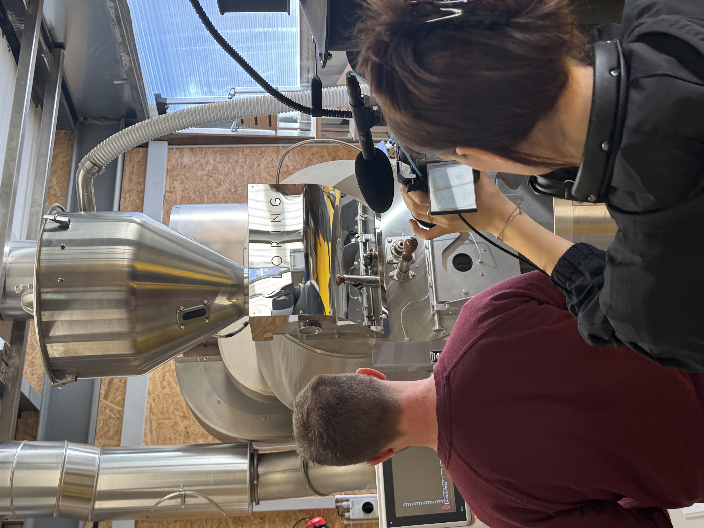

Let's makethings move.
01 / Über mich
Ich bin Denja.
Mit Wurzeln im Marketing und einem Studium in Multimedia Production verbinde ich strategisches Denken mit visuellem Handwerk. Aus einer anfänglichen Liebe zur Fotografie ist heute ein umfassendes Angebot für visuelles Storytelling in Bild und Film entstanden

02 / Arbeiten
Ausgewählte Arbeiten.


Momente beobachten.Geschichten erzählen.
Angefangen hat alles mit ein bisschen Herumexperimentieren mit meiner Bialetti-Kanne.
Warum den weiblichen Zyklus tabuisieren, statt ihn als Vorteil zu nutzen?
Es sind die Orte und die Menschen dahinter, die das Lebensgefühl einer Stadt prägen.
03 / Social
Instagram.